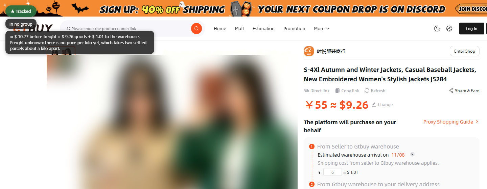
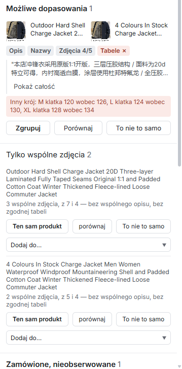
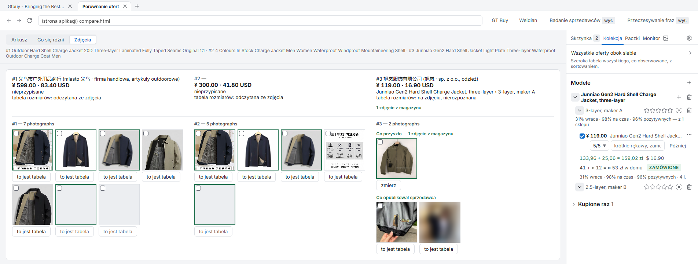
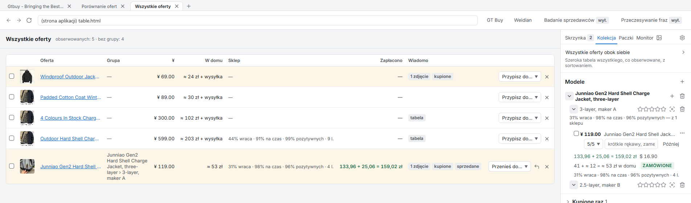
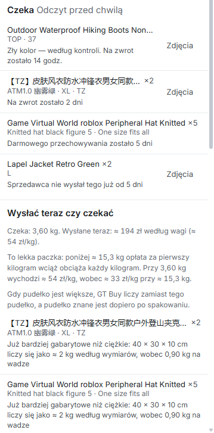

GT Buy Browser, projekt własny
Te same zdjęcia.Inny krój.
| Rozmiar | Klatka, oferta A | Klatka, oferta B |
|---|---|---|
| M | 126 | 120 |
| L | 130 | 124 |
| XL | 134 | 128 |
Ten sam produkt wystawia kilkanaście sklepów na Taobao, 1688 i Weidian, często pod tymi samymi zdjęciami. Zbudowałem przeglądarkę, która pamięta każdą obejrzaną ofertę, rozpoznaje ten sam produkt po tekście, pikselach zdjęć i tabelach rozmiarów, a potem liczy, ile jedna rzecz naprawdę kosztowała w złotówkach.
Aplikacja desktopowa w Electronie i TypeScripcie. Działa i używam jej codziennie od sierpnia 2026; rozwijam ją dalej.
Księga
- 8 680
- ofert zapamiętanych z wyników wyszukiwania
- 537
- ofert otwartych i oznaczanych przy następnych wizytach
- 68
- ofert pogrupowanych w 25 wariantów jedenastu produktów
- 2 831
- różnych ofert znalezionych w 48 automatycznych przeszukiwaniach
- 164
- sztuki w 8 paczkach, każda z kosztem w PLN i udziałem we frachcie
- 2 138
- testów jednostkowych, wszystkie przechodzą
- 52
- testy end-to-end na prawdziwej aplikacji i żywych stronach
- 37
- opisanych błędów, które przeszły zielone testy, każdy z własnym testem
- 358
- commitów, 128 zadań, 15 zapisanych decyzji architektonicznych
- 39 068
- linii TypeScriptu bez testów, do tego 25 513 linii testów
Stan na 19 listopada 2026. Policzone z historii git, z repozytorium i z kopii lokalnej bazy aplikacji. Kod źródłowy jest prywatny.
Jedna sesja zakupów

Na stronie sprzedawcy
Aplikacja dopisuje się do cudzej strony: oferta jest oznaczona jako śledzona, widać jej grupę i rozbicie kosztu. Gdy frachtu nie da się jeszcze policzyć, mówi to wprost zamiast zgadywać.
Podejrzenie, że to ten sam produkt
Panel zestawia dowody: podobny opis, cztery wspólne zdjęcia rozpoznane po hashu percepcyjnym i tabele rozmiarów odczytane OCR-em. Tu tabele się nie zgadzają, więc pojawia się ostrzeżenie. Grupuję albo odrzucam ja, nie aplikacja.
Trzech sprzedawców obok siebie
Ceny w juanach i dolarach, stan tabeli rozmiarów i zdjęcia sprzedawcy obok zdjęcia z kontroli w magazynie pośrednika, czyli tego, co naprawdę przyszło.
Ile to kosztuje w domu
Cena, koszt z wysyłką w złotówkach (z „≈”, gdy to szacunek), reputacja sklepu i kwota faktycznie zapłacona kartą, przeliczona po kursie z karty albo NBP.
Wysłać teraz czy czekać
Zegary zwrotu i darmowego składowania w magazynie oraz rachunek: ile kosztuje kilogram teraz, a ile przy cięższej paczce.Zrzuty z prawdziwej aplikacji na danych przykładowych z testów. Strona pośrednika jest niezalogowana, twarze na zdjęciach sprzedawców rozmyte.
Jak to jest zrobione
Testy na żywo. Każdy poważny błąd tej aplikacji przeszedł zielony zestaw testów jednostkowych: wyścig dwóch obserwatorów DOM, obrazki ładowane leniwie w przewijanym panelu, strona w Vue, która dociąga dane długo po załadowaniu. Dlatego obok testów jednostkowych jest własny zestaw testów, który uruchamia zbudowaną aplikację na prawdziwych stronach.
Bezpieczeństwo Electrona. Każda wiadomość IPC jest walidowana, zakładki z cudzymi stronami nie widzą mostu aplikacji, a sprawdzanie domen nie da się oszukać adresem w rodzaju evilgtbuy.com.
Uczciwe pieniądze. Szacunek jest odróżniony od kwoty z wyciągu, kurs pochodzi z karty albo z NBP, a zaokrąglenie nie udaje dokładności, której źródło nie ma.
Architektura. Logika domenowa w czystym, testowalnym module, efekty uboczne osobno, SQLite z wersjonowanym schematem i migracjami. Decyzje i ich zmiany zapisuję jako ADR-y.
Z agentami AI. Specyfikację, zadania i decyzje piszę sam. Prostsze zadania implementowali agenci (Claude Code), a ja pisałem im briefy, przeglądałem zmiany i sprawdzałem je na żywej stronie przed scaleniem.
Narzędzia. Electron 43, TypeScript 7, esbuild, SQLite (node:sqlite), Vitest z happy-dom, tesseract.js z modelem chińskim, API NBP.